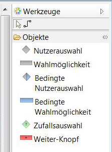
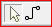
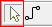
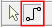
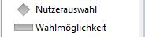
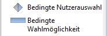
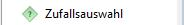
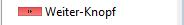

Werkzeugleiste
In der Werkzeugleiste finden Sie die für das Erstellen einer Szenengraphstruktur
notwendigen Werkzeuge und Elemente. Sie befindet sich standartmäßig rechts neben dem Szenengraph

Im Folgenden erfahren Sie mehr über die einzelnen Funktionen der Elemente.:
- 
Mit den oberen beiden Buttons können Sie zwischen zwei Werkzeugen wechseln, dem "Auswahl-Werkzeug" und dem
"Verbindung-Werkzeug".
- 
Das "Auswahl-Werkzeug" benutzen Sie, um Elemente im Szenengraphen auszuwählen und zu verschieben.
Auch Verbindungen können damit neu verknüpft werden.
- 
Das "Verbindung-Werkzeug" wird benutzt, um Verbindungen zwischen den im Szenengraph angeordneten Objekten
zu schaffen. Dadurch schaffen Sie erst die Struktur des gesamten Projektes.
- Eine Nutzerauswahl ist die Standard-Wahleinstellung nach einem Video.
Dadurch wird vorgegeben welches Video als nächstes abgespielt werden soll.

- Mit der Bedingte Nutzerauswahl können Wahlmöglichkeiten erstellt werden für die Bedingungen definiert
werden können. Beispielsweise kann man dadurch bei den Wahlmöglichkeiten voraussetzen, dass ein anderes Video bereits
angeschaut wurde.

- Bei einer Zufallsauswahl wird zufällig eins der verknüpften Videos aufgerufen.

- Wenn zwei Videos mit dem Weiter-Knopf verknüpft werden, werden Sie direkt nacheinander abgespielt.

Mit jeder Nutzerauswahl können mehrere Wahlmöglichkeiten verknüpft werden. Wie die verschiedenen Auswahlelemente und
Wahlmöglichkeiten im Szenengraph angeordnet werden, erfahren Sie in der Erklärung des Szenengraphs.